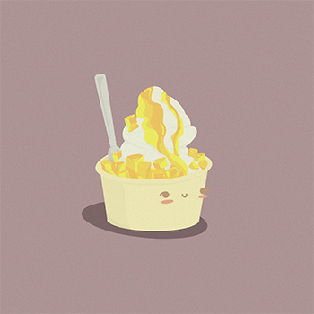
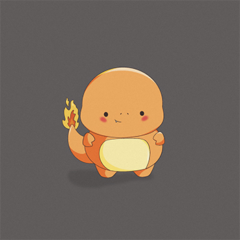
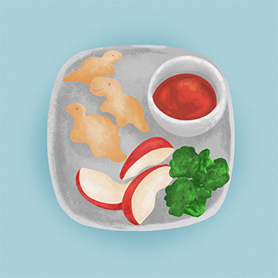
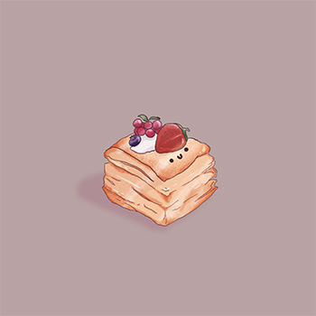
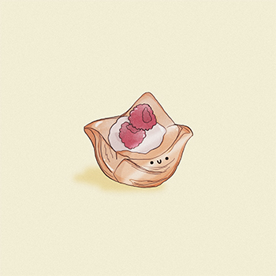
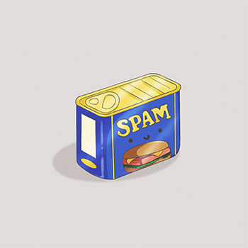
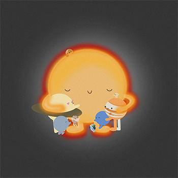
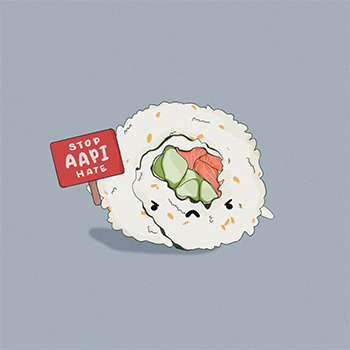

Products
Welcome to My Shop :)
Thank you for stopping by my shop, madebykeiko!
Bingsu Buddy

$3.25
- About Bingsu Buddy: Bingsu Buddy's favorite season is summer because he can enjoy the beach and tan in the sun.
- Sticker Details: 100 % Waterproof, Weatherproof and Scratch Resistant Vinyl Sticker. Size: 2in W x 2.5in H
- Design Inspiration: Bingsu is the perfect icey dessert for anyone with a sweet tooth like me. If you watch Kdramas, like I do, you may have seen many a characters indulging in this sweet summer treat. And a sidenote, if you live in New York, you should definitely stop by Grace Street and try their og mango bingsu.
Char Char

$3.25
- About Char Char: Char Char is a spinoff of the reptilian Pokemon born with a flaming tail. He enjoys battling other Pokemon and indulging in any flamin' hot treats.
- Sticker Details: 100 % Waterproof, Weatherproof and Scratch Resistant Vinyl Sticker. Size: 1.5in W x 2.5in H
- Design Inspiration: Char Char is inspired by the original fire type Pokemon Charmander. Growing up, I loved watching the animated television show, trading Pokemon cards, and battling the fictional characters on my DS. This is my spin on drawing Charmander in my art style.
Chicken Tendies

$3.50
- About Chicken Tendies: Chicken Tendies like to play with kids in their spare time and loves making people smile even if they do end up being eaten.
- Sticker Details: 100 % Waterproof, Weatherproof and Scratch Resistant Vinyl Sticker. Size: 2in W x 2in H
- Design Inspiration: Like the song by Clinton Kane, Chicken Tendies were created from my love for chicken tenders. Because, and I do say this with caution, while McDonald's McNuggets are to die for, something about dino nuggets makes eating fun and more tasteful. So ya, maybe dino nuggest >>> McNuggests...
Pastry Pat

$3.25
- About Pastry Pat: Pastry Pat is known for his fluffy personality that adds a little bit of cheer to the end of a every meal.
- Sticker Details: 100 % Waterproof, Weatherproof and Scratch Resistant Vinyl Sticker. Size: 2in W x 2in H
- Design Inspiration: Pastry Pat t'was born from my urge to draw smiley faces on all foods and of course, my cravings for sweet treats (especially if they are baked). I will add that the fruit on top of pastries is my favorite because it makes me feel like I'm eating something healthy.
Puff Peri

$3.25
- About Puff Peri: Puff Peri and Pastry Pat are best friends for life and are always seen hanging out at behind the bakery counter together. Just like Pat, Peri is known for her bubbly personality that adds a little bit of sweetness to the end of a every meal.
- Sticker Details: 100 % Waterproof, Weatherproof and Scratch Resistant Vinyl Sticker. Size: 2in W x 2in H
- Design Inspiration: Puff Peri t'was born from my urge to draw smiley faces on all foods and of course, my cravings for sweet treats (especially if they are baked). I will add that the fruit on top of pastries is my favorite because it makes me feel like I'm eating something healthy.
Spammy Sammy

$3.50
- About Spammy Sammy: Spammy Sammy enjoys long walks on the beach and nice temperature-controlled cupboards.
- Sticker Details: 100 % Waterproof, Weatherproof and Scratch Resistant Vinyl Sticker. Size: 2in W x 1.5in H
- Design Inspiration: Spammy Sammy came from my personal love for all things Spam. The product has become a staple in my apartment and loved by all for its savory flavor and meal variety. My asianness does indeed prefer this ingredient to hotdogs or other mystery meat substitutes. My personal favorite meals are spam musubis, fried rice with spam and budae jjigae.
Solar Hug

$3.25
- About Solar Hug: Everyone likes warm hugs but the Solar System likes the warmest hugs. Cause the sun is pretty hot itself ;)
- Sticker Details: 100 % Waterproof, Weatherproof and Scratch Resistant Vinyl Sticker. Size: 1.5in W x 1.5in H
- Design Inspiration: It can be pretty lonely by yourself but there are people closer to you than you think. Like the solar system, just because you're far away doesn't mean you still can't give eachother a hug :)
Stop AAPI Hate

$3.50: 100% of the proceeds for this sticker will go to Stop Asian Hate and the continued fight against racism.
- About Mr. Sushi Man (Stop AAPI Hate): Mr. Sushi man is continuing the fight and you should too. Educate. Speak up. Raise awareness.
- Sticker Details: 100 % Waterproof, Weatherproof and Scratch Resistant Vinyl Sticker. Size: 1.5in W x 1.5in H
- Design Inspiration: Mr. Sushi man's sign says it well enough.